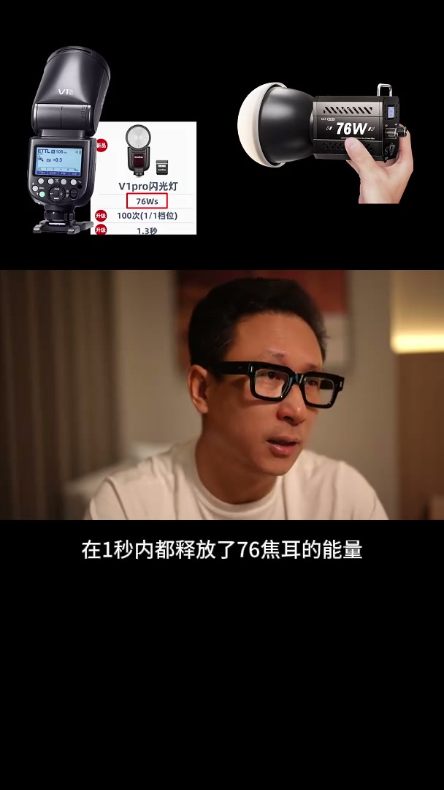
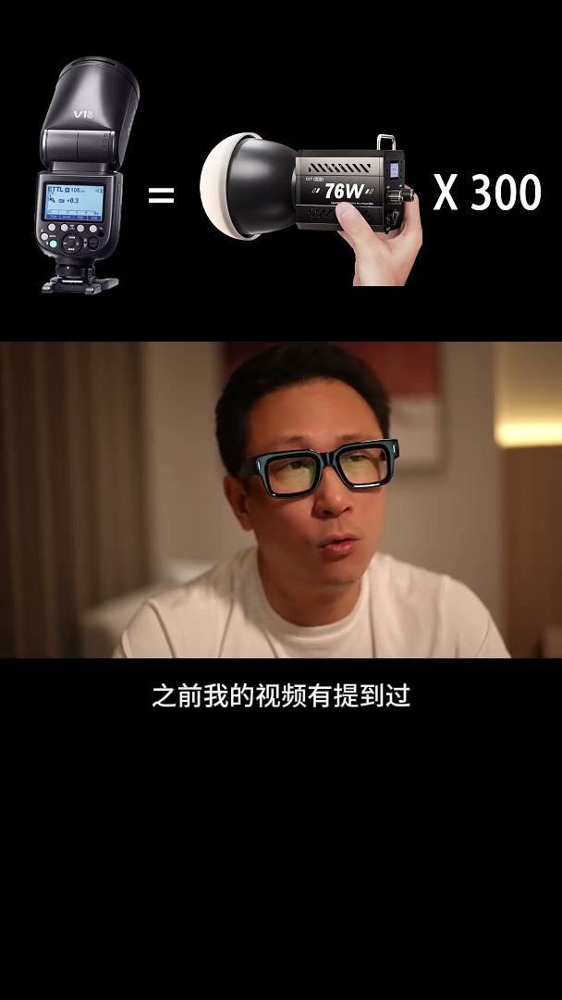

内容要点
[00:00] 同瓦數的閃光燈和閃亮燈的亮度之筆
[00:03] 這是一個很有意思的問題
[00:05] 如果你去網上查或者問一些老師
[00:07] 你得到的答案可能會是
[00:08] 這是兩個不同的概念
[00:10] 他們無法放在一起去比較
[00:13] 但現實中我們又經常面對選擇閃光燈還是常亮燈
[00:17] 而且標注的參數都是瓦
[00:19] 甚至還有不少攝影師認為同瓦數的閃光燈和閃亮燈是相同的
[00:24] 這顯然不符合我們的日常經驗
[00:26] 所以對他們的亮度之筆我們確實存在很強的好奇心
[00:30] 這些視頻我把這兩組燈的亮度之筆來說個明白
[00:34] 比如一個我們經常使用的60指數的機靈閃
[00:38] 它是76瓦秒
[00:40] 相對於76瓦的長亮燈它的亮度之筆差多少呢
[00:44] 兩者相同的是在1秒內都釋放了76.2的能量
[00:49] 但重要的區別就是這個能量是在多長的時間之內釋放出來的
[00:55] 長亮燈實實在在就是在1秒內平均釋放
[00:59] 但閃光燈就不同了在實際上閃光燈單持的能量釋放
[01:04] 並不是在1秒內完成的而是遠遠小於1秒
[01:07] 常規旗艦級的機靈閃在全光輸出下
[01:10] 它的閃爍時長差不多是300分之1秒左右
[01:13] 也就是說其實它在300分之1秒以內就已經輸出了76.2的能量
[01:19] 而長亮燈是在1秒內均勻的輸出了76.2的能量
[01:23] 說到這兒你可能就明白了
[01:25] 在這300分之1秒時間之內閃光燈的亮度是長亮燈的300倍
[01:31] 也就是說這時候閃光燈的功率相當於76瓦乘上300
[01:36] 大概是2萬多瓦
[01:38] 也就是說如果閃光燈保持在全光輸出的亮度持續下去
[01:43] 相當於2萬多瓦的長亮燈的亮度
[01:46] 這這個理論的值實際在各種原因下有些偏差
[01:49] 但不妨礙我們去理解這裡的底層邏輯
[01:53] 之前我的視頻有提到過
[01:55] 我們平常用的基金閃如果換成長亮燈
[01:58] 大概相當於1萬瓦以上
[02:00] 很多人還不太相信
[02:02] 閃光燈閃爍時間是個波星圖
[02:04] 這裡面又涉及到兩個很重要的參數
[02:07] T0.1和T0.5
[02:09] 假說我們極端一下
[02:10] 支取T0.5這段波風這個數值會更誇張
[02:14] 最後我想再說一句就攝影來說閃光燈有學習的門檻
[02:19] 但它確實比長亮燈更好用
[02:21] 長亮燈可以幫助你建立光感和用光思路
[02:25] 但閃光燈才是人像攝影師必須掌握的一個工具



